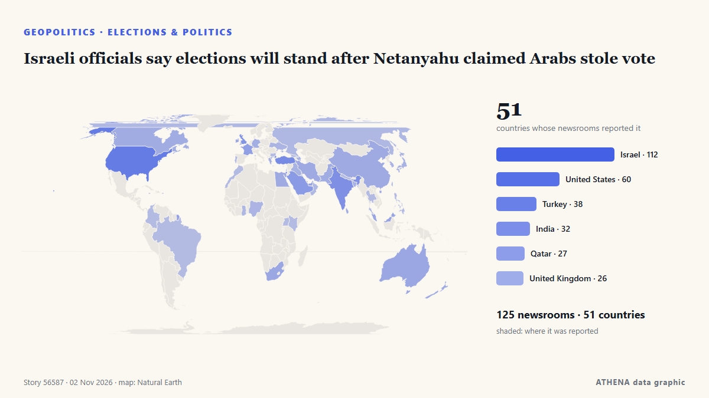

Geopolitik, Politik und Sicherheit
Schlagzeilen werden auf Englisch angezeigt, wie veröffentlicht.

Wahlen und PolitikIsraeli officials say elections will stand after Netanyahu claimed Arabs stole vote
Gemeldet von 127 Medien in 51 Ländern seit dem 24. Okt. Zuerst gemeldet von Responsible Statecraft. ATHENA bewertet das Risiko mit 5.4/10 (erhöht), Konfidenz 90 %.
| 20. Okt. | 86 |
|---|---|
| 21. Okt. | 165 |
| 22. Okt. | 271 |
| 23. Okt. | 251 |
| 24. Okt. | 175 |
| 25. Okt. | 179 |
| 26. Okt. | 316 |
| 27. Okt. | 274 |
| 28. Okt. | 234 |
| 29. Okt. | 243 |
| 30. Okt. | 272 |
| 31. Okt. | 141 |
| 1. Nov. | 144 |
| 2. Nov. | 27 |
Presidential Runoff Turnout Stands at 19.33% as of 16:00
Voter turnout in Bulgaria’s presidential and vice-presidential election stood at 2.4% as of 9:00 a.m.... von Novinite
Oil slips more than 1% as talks continue on ending Iran war
Both oil benchmarks are down in early trading. von The Business Times
Ukraine evacuates civilians from parts of Kherson region as expiry of Oleshky ceasefire nears
Nov 1 (Reuters) - Ukraine's military said it evacuated 167 people from threatened areas of southern Kherson region on Sunday as a temporary local ceasefire neared expiry -- two days after busloads of… von Daily Maverick
Turkic states target 2027 launch for joint satellite from Kazakhstan
Russia also intends to assist Tanzania in establishing a national space agency. von TASS (English)
Pope Leo makes history by voting in US midterms
Rome — Pope Leo XIV has submitted a mail-in ballot for the US midterms, becoming the first pope to vote in a US election and likely the first to vote in a secular democratic election. von Egypt Independent
Russian strikes cut power to thousands in Ukraine as drones damage Russian facility
Russia says 235 Ukrainian drones downed overnight, Kyiv says 371 of 433 Russian long-range drones shot down. von Express Tribune
Brazil’s Lula to attend COP31 climate summit in Türkiye
Our experts unpack what Lula’s victory means for Brazil’s ties with Washington and how it could reshape a region trending right. von Atlantic Council
Erdogan, Zelensky talk Black Sea Grain Corridor
Turkish President Recep Tayyip Erdogan and Ukrainian President Volodymyr Zelensky agreed on Saturday to continue work on the Black Sea Grain Corridor, aimed at enabling grain shipments from Ukraine. von AzerNews
Trump says Iran war will end ‘very soon, one way or the other’
President Trump expressed optimism that the conflict with Iran would end soon, though he didn’t provide specific details on how this would occur. von Arab News
UK PM Burnham says he is ‘open’ to formal apology for slavery, but rules out reparations
At least 12.5 million Africans were abducted and sold into slavery. von Express Tribune
Can Democrats win the US Senate? 10 key midterm races to watch
From Texas to Maine, rising prices and the Iran war put key Senate races in play as Democrats fight for control. von Al Jazeera English
Haley Stevens endorses GOP candidate in Michigan Senate race, spurning Abdul El-Sayed
Rep. Haley Stevens was scheduled to attend a unity event today with Abdul El-Sayed, who beat her in the Democratic primary. von NPR
Trump administration bolsters bid to block Alaska Senate certification
President Donald Trump’s administration filed a revised lawsuit on Thursday seeking to block Alaska’s election results if Republican incumbent Dan Sullivan loses narrowly and issued more than 40… von FBC News
US Embassy in Russia warns citizens in Moscow of potential 'mass casualty event' near museum
"The US Embassy in Moscow is aware of a credible threat of a mass casualty event TODAY, October 31, at the Tsaritsyno Museum Reserve in Moscow," the embassy wrote. von The Jerusalem Post
Ukraine claims strike on major Russian oil refinery near Moscow
Russia reports significant damage to an industrial facility in the Nizhny Novgorod region after a massive overnight drone attack, as Kiev claims it targeted the Kstovo oil refinery. von TRT World
Thousands protest in India's capital against voter roll revision
NEW DELHI: Thousands joined a protest led by opposition politicians in India’s capital on Sunday, renewing demands for the country’s election chief to resign over an overhaul of voter lists they say… von New Straits Times
Indian authorities tighten security ahead of big opposition march in Delhi
Protesters are set to demand the resignation of India's election chief over a controversial revision of voter lists. von CNA (Channel NewsAsia)
Iran warns US, Israel against new attacks after Trump, Netanyahu threats
TEHERAN: Iran’s supreme leader warned the United States and Israel Saturday of fresh attacks following their threats to resume strikes after crucial elections, as fears increased over a return to… von New Straits Times
Turkey nominates OSCE chief Sinirlioğlu for UN’s top job
Turkey has nominated Feridun Hadi Sinirlioğlu, head of the Organization for Security and Co-operation in Europe (OSCE), to be the next UN secretary-general, a diplomatic source confirmed on Saturday. von Turkish Minute
G20 FM meeting ends without joint communique amid deep divisions
Foreign ministers from the Group of 20 leading economies are gathering in Atlanta on October 30-31 for talks expected to expose continuing divisions among Western governments over Russia's war in… von RFE/RL (English)
Evacuees from Russian-occupied Oleshky reunited with relatives in Ukraine
Russia and Ukraine have not specified how many people chose to leave the city. von The Irish News (Belfast)
Rapper Nicki Minaj joins Trump onstage at Michigan rally
The Super Bass singer is the latest big name to campaign in Michigan, where a tight Senate race is playing out ahead of the 3 November midterms. von BBC News
Rubio says US yet to decide on new Iran strikes
ATLANTA: US President Donald Trump has not made a decision about fresh strikes on Iran amid stalled peace talks, US Secretary of State Marco Rubio said Saturday. von Business Recorder
Russian foreign minister Lavrov arrives in US for G20 meeting
Russian Foreign Minister Sergey Lavrov has arrived in the US to attend a G20 meeting in Atlanta amid global tensions on various issues. von Arab News
US approves sale of 500 Patriot missiles to Ukraine
The American-made interceptors are the only effective weapon for downing Russia's ballistic missiles. von BBC News
Flavio Bolsonaro Claims Political Persecution After Leaving Brazil
Bolsonaro disembarks plane after landing in Florida: AFP. von Gulf News
Aid operation and evacuations in Oleshky amid brief truce agreed to by Russia and Ukraine
A humanitarian mission entered the devastated city of Oleshky on Friday, officials said, as Russia and Ukraine observed the most significant truce of the 4½-year war that began with Moscow's… von PBS NewsHour World
Nations commit to get nature goals back on track
Nearly 200 nations struck hard-fought agreements Friday at a U.N. biodiversity summit, but the outcome was accompanied by disappointment over missed opportunities to address humanity's destructive… von Phys.org
Qatari Mediators Return to Tehran in Push for US-Iran Peace Deal
Qatari mediators returned to Tehran on Friday to advance efforts for a US-Iran agreement, but disagreements over nuclear negotiations, oil sanctions and a US port blockade continue to obstruct a… von Khaama Press
3 Killed as Ukraine Renews Drone Strikes Against Oil Refineries
Deputy Prime Minister Alexander Novak confirmed that Ukrainian drones targeted three oil refineries and one gas chemical complex overnight. von The Moscow Times
Starved residents of Russian-occupied Oleshky return to Ukraine during a rare local ceasefire
The six-day ceasefire was reached after mediation efforts by US first lady Melania Trump and with the pope’s help. von The Straits Times
US attacks 2 Iranian fishing boats off Masan, Qeshm Island
Iranian state broadcaster IRIB, citing a Hormozgan province official, said on Saturday that the US attacked two fishing boats near Qeshm Island, leaving two fishermen missing and one wounded. von Business Recorder
Oil jumps 2%, settles at 6-month highs on fears of escalation in Iran
Oil prices jumped more than 2 percent on Friday and settled at their highest levels since the end of April, as traders braced for a potential escalation in the Iran war after the U.S. midterm… von The Korea Times